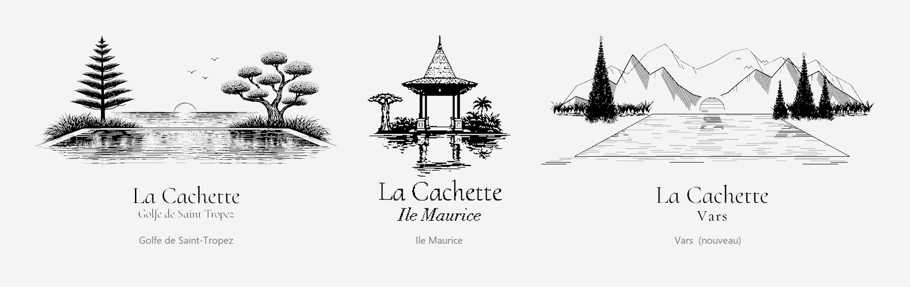

L'esprit
Un nom, trois lieux
Une cachette n'est pas une adresse qu'on montre. C'est une maison où l'on disparaît quelques jours, et dont on garde le nom pour soi.
Le fil
L'eau, d'abord
Les trois emblèmes racontent la même scène : un plan d'eau, son reflet, et les arbres du lieu de part et d'autre.
Pins et pin parasol dans le Var, baobab et palmiers sous les tropiques, mélèzes dans les Hautes-Alpes. Mis côte à côte, on lit trois fois le même geste et trois fois un climat différent — une eau tiède, une eau salée, une eau froide.
À l'Île Maurice, les photographies le montrent littéralement : le bassin longe la maison, le salon et la salle à manger s'ouvrent dessus, et les chambres s'alignent de l'autre côté. Pour Grimaud et Vars, l'emblème dit l'intention ; les photographies diront le reste.
La manière
Des maisons, pas un hôtel
On loue une maison entière, pas une chambre dans un ensemble.
Il n'y a ni réception, ni voisin de palier, ni carte à la porte. Les maisons se réservent complètes, pour un groupe ou une famille, et s'utilisent comme les siennes : la cuisine, les terrasses, le bassin, la table dehors.
Une demande de séjour n'est donc pas une réservation en ligne. Elle ouvre une conversation : les dates, le nombre de personnes, l'occasion. Nous répondons avec les disponibilités et les conditions, et rien n'est engagé avant.
Le trait
Une gravure plutôt qu'un logotype
Trois gravures au trait noir, dessinées dans la même main, pour trois maisons qui ne se ressemblent pas.
Le choix de la gravure n'est pas décoratif. Une photographie fige une saison et une lumière ; un trait gravé laisse la place à celles qu'on n'a pas encore vues. Et il tient partout : sur une carte, sur un carnet, dans un coin d'écran, en réserve blanche sur fond noir.
Le nom, lui, ne change pas. « La Cachette » est composé exactement de la même façon sur les trois signatures ; seul le lieu se pose en dessous. C'est la marque qui reste, et le lieu qui varie — jamais l'inverse.

L'origine
Comment tout a commencé
À écrire
Cette page mérite un paragraphe qui ne peut venir que de vous : la première maison, l'année, ce qui a donné envie des deux autres, et pourquoi ce nom. Trois cents mots suffisent, écrits à la première personne — c'est ce que les visiteurs liront en premier s'ils arrivent ici.